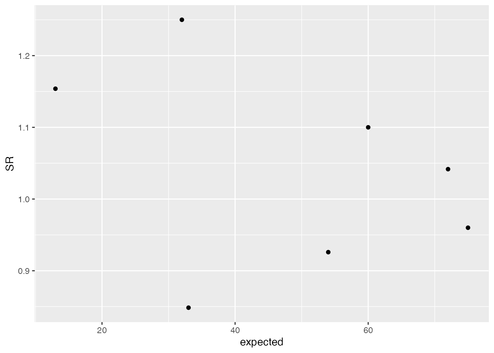
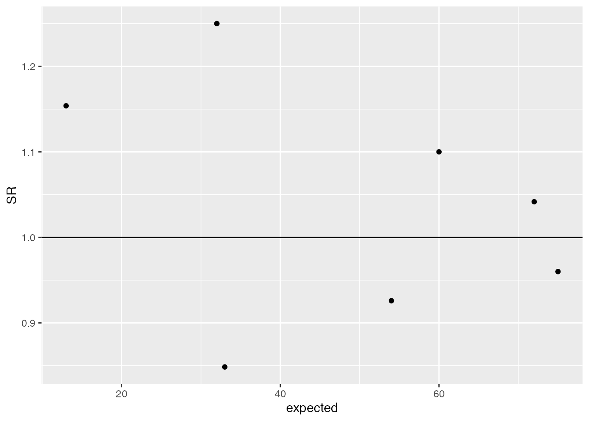
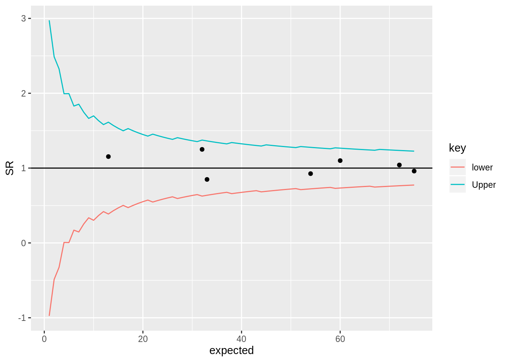
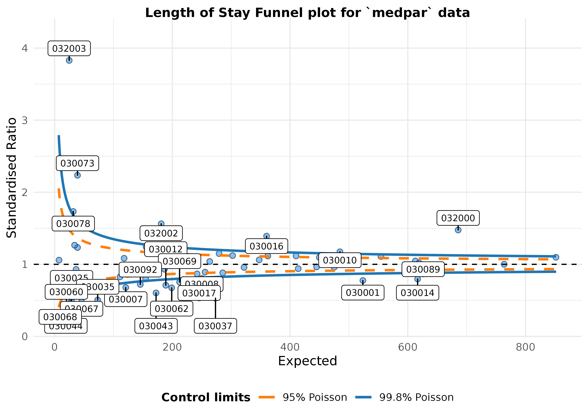
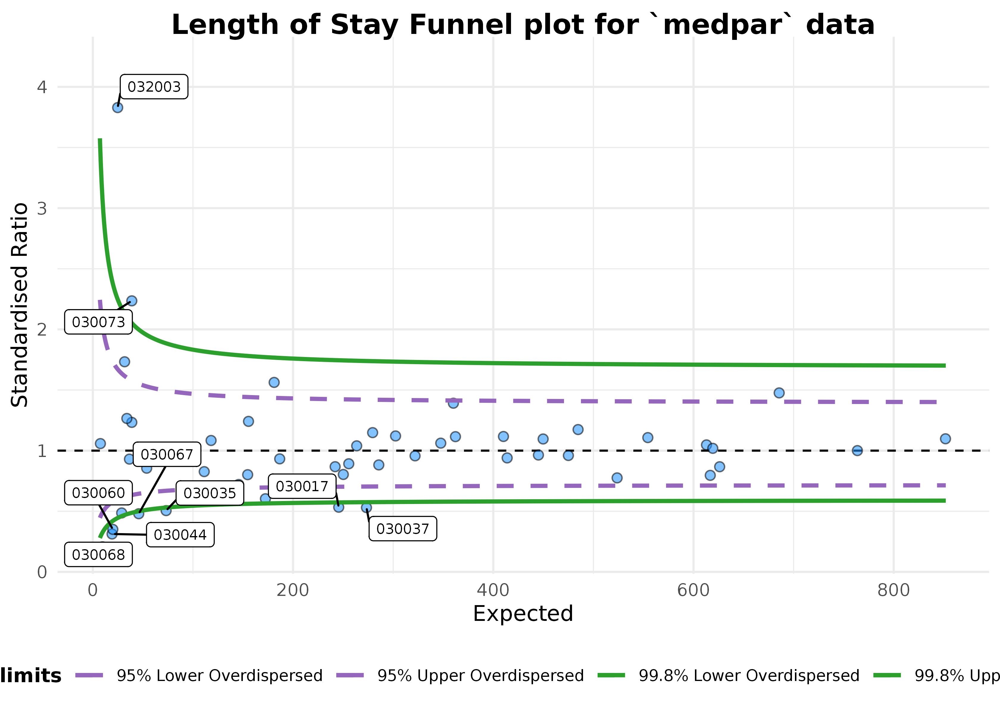

Funnel plots are a common tool for comparing organisations or units using proportions or standardised rates. A common use of them is for monitoring mortality at hospitals. This is an introductory post on the subject, that gives a little information about them and how they are constructed. It is deliberately light on theory, focusing on use, some of the theory is referenced for interested readers.
This post also uses a funnel plot function, for indirectly standardised ratios, that I built as part of my PhD work. The function is based on ggplot2 (Wickham 2009), and is available at https://github.com/chrismainey/FunnelPlotR, although it’s a work in progress.
There are different kinds of funnel plot, but this post focuses on the type used to compare standardised mortality and other similarly constructed indicators .
How do you go about comparing organisations? We could simply look at indicator data and rank them, but that could be unfair if the conditions are different at each organisation. E.g. every hospital differs in size, the services it offers, and the patients it sees. We might expect a hospital seeing a higher proportion of elderly patients to have a higher mortality rate. Is it fair to compare it to an organisation serving a younger population who may be ‘healthier’ in general? Naively comparing organisations by ranking in league tables has been shown to be a bad idea (Goldstein and Spiegelhalter 1996; Lilford et al. 2004).
This scenario is not a million miles away from the techniques used in meta-analysis of clinical trial, where we may have trials of different sizes, with different estimates of effect, and differing variances. Some of the techniques applied to meta-analysis have been adapted for healthcare monitoring, including funnel plots and methods to adjust for overdispersion (Spiegelhalter 2005a, 2005b; Spiegelhalter et al. 2012).
If we want to compare a standardised ratio or similar indicator, we can make a plot with the indicator on the Y-axis, and a measure of the unit size on the X-axis. This is commonly the sum of the predicted values for standardised ratios (e.g. the predicted number of cases), or the number of patients/discharges etc. Our centre line, the average value, can be surrounded by ‘control limits,’ a concept from Statistical Process Control. These limits are statistical boundaries to separate natural (‘common-cause’) variation and systematic differences (‘special-cause variation’) (Mohammed et al. 2001). This is commonly at organisational level, but could be at any aggregation.
The reason these limits resemble a funnel is due to the effects of size. The expected variation is larger when we are looking at fewer cases. For example, imagine an experiment where we toss an unbiased coin to see the expected value. If we toss that coin twice and both are ‘heads,’ our data is telling us that all coin tosses end up as ‘heads.’ This is not true, and we are making an assumption that we know would be different if we repeated it more times. The margin of error around this is high. So if we performed the same experiment 10, 100 or 1000 times, we would expect it to become 50:50, heads/tails, and the margin of error is proportionally smaller. This is also true of indicators based on counts, like funnel plots. We expect less variation between points as organisations get larger.
library(ggplot2)
library(tidyr)
# Make up some data, as if it was from a regression model with observed and predicted (expected) events.
dt <- data.frame(observed = c( 15,40,72,28,50, 66, 75),
expected = c( 13,32,75,33,54, 60, 72),
unit = factor(c("A","B","c","D","E", "F", "G"))
)
# Add a ratio (SR) of observed to expected, our indicator
dt$SR <- dt$observed / dt$expected
# Scatter plot in ggplot
a<-ggplot(dt, aes(x=expected, y= SR))+
geom_point()
a
# Now add a central line, in a ration like this, 1 is the average/expected value.
a<- a+geom_hline(aes(yintercept=1))
a
# Add a 95% Poisson limit, by using the density function to get the quantile value for each 'expected'.
lkup<-data.frame(id=seq(1, max(dt$expected), 1))
lkup$Upper<-(qpois(0.975,lambda = lkup$id) - 0.025) / lkup$id
lkup$lower<-(qpois(0.025,lambda = lkup$id) - 0.975) / lkup$id
lkup<-gather(lkup, key, value,-id)
a+ geom_line(aes(x=id, y=value, col=key), data=lkup)
You’ll probably notice the ‘jagged’ lines in the plot above. This is because the Poisson distribution is only defined on integers, and most common implementations of Poisson functions make some sort of rounding/guess between points. They are generally poorly defined on low values, but there are other options that I’ll discuss in another future post.
The methods described above have been developed into a basic R package to draw these plots using ggplot2. It also allows users to specify whether they want ‘overdispersed’ limits. I will write another post about overdispersion in the coming weeks, but essentially, we have more variation than we would expect from theory alone. To account for this, we can estimate how much greater the variance in our data is, and expand the funnel limits by this amount.
Part of this process involves ‘Winsorisation’ of the distribution (Spiegelhalter 2005b; Spiegelhalter et al. 2012), where we set the outer most values to a defined percentile to reduce the effects of outliers. This is commonly set to 10% at each end of the distribution, but there is a variant method for this, used in the NHS’ Summary Hospital Mortality Indicator’, where the distribution is truncated instead of Winsorised (Clinical Indicators Team 2018).
I originally wrote this package to present plots for my PhD thesis, focused on predicting NRLS incident reporting ratios after risk-adjustment. The overdispersion was particularly high in this case, and differences between the two methods were noticeable, with the SHMI/truncation method appearing better suited.
Here we will apply this to some data by picking up the medpar dataset discussed by Hilbe and available in the COUNT package (Hilbe 2014). It is a set of data points from hospitals in Arizona, in 1991, based on US Medicare data. We’ll use the ‘length of stay’ field ’, los, and model it from the other predictors in the data.
We will first load the data and build a simple predictive model, using a Poisson GLM, with a few of the predictors from the dataset. This post is not focused on modelling techniques, but a Poisson Generalised Linear Model (GLM) is more appropriate for count data than linear regression. The key message, though, is that Poisson models make no adjustment for the variance within the data and are likely to be overdispersed. A more sophisticated approach might use something like a negative binomial or multilevel model (discussed in a later post).
A little reformatting is required before modelling:
library(FunnelPlotR)
library(COUNT)
library(ggplot2)
data(medpar)
medpar$provnum<-factor(medpar$provnum)
medpar$los<-as.numeric(medpar$los)
mod<- glm(los ~ hmo + died + age80 + factor(type), family="poisson", data=medpar)
summary(mod)
#>
#> Call:
#> glm(formula = los ~ hmo + died + age80 + factor(type), family = "poisson",
#> data = medpar)
#>
#> Deviance Residuals:
#> Min 1Q Median 3Q Max
#> -5.7309 -1.9554 -0.5529 0.9717 14.5487
#>
#> Coefficients:
#> Estimate Std. Error z value Pr(>|z|)
#> (Intercept) 2.26875 0.01246 182.011 < 2e-16 ***
#> hmo -0.07637 0.02393 -3.192 0.00142 **
#> died -0.24574 0.01826 -13.458 < 2e-16 ***
#> age80 -0.02141 0.02050 -1.045 0.29617
#> factor(type)2 0.24921 0.02099 11.871 < 2e-16 ***
#> factor(type)3 0.74869 0.02627 28.496 < 2e-16 ***
#> ---
#> Signif. codes: 0 '***' 0.001 '**' 0.01 '*' 0.05 '.' 0.1 ' ' 1
#>
#> (Dispersion parameter for poisson family taken to be 1)
#>
#> Null deviance: 8901.1 on 1494 degrees of freedom
#> Residual deviance: 7977.7 on 1489 degrees of freedom
#> AIC: 13705
#>
#> Number of Fisher Scoring iterations: 5Now we have a regression that we can use to get a predicted los that we will compare to observed los:
Now we can build a funnel plot object with standard Poisson limits, and outliers labelled. The function returns a list of the plotted data, the plotted control limit range, and the ggplot object, hence object[3] to call it.
funnel_plot(numerator=medpar$los, denominator=medpar$prds, group = medpar$provnum,
title = 'Length of Stay Funnel plot for `medpar` data', Poisson_limits = TRUE,
OD_adjust = FALSE,label_outliers = 99, return_elements = "plot")
#> $plot
#> Warning: Removed 1 rows containing missing values (geom_point).
#> Warning: Removed 1 rows containing missing values (geom_label_repel).
#> Warning: Removed 1 rows containing missing values (geom_label_repel).
That looks like too many outliers! There is more variation in our data than we would expect, and this is referred to as: overdispersion.
So lets check for it:
The following ratio should be 1 if our data are conforming to Poisson distribution assumption (conditional mean = variance). If it is greater than 1, we have overdispersion:
This suggests the variance is 6.24 times the condition mean, and definitely overdispersed. This is a huge topic, but applying overdispersed limits using either SHMI or Spieglehalter methods adjust for this by inflating the limits:
funnel_plot(numerator=medpar$los, denominator=medpar$prds, group = medpar$provnum,
title = 'Length of Stay Funnel plot for `medpar` data', Poisson_limits = FALSE,
OD_adjust = TRUE, method = "SHMI",label_outliers = 99, return_elements = "plot")
#> $plot
Given these adjustments, we now only have nine organisations showing special-cause variation. To interpret this plot properly, we would first investigate these outlying organisations before making any changes to the system/indicator. We should check for possible data quality issues, such as errors, missing model predictors, environmental factors (e.g. one organisation changing computer systems and data standards etc. during the monitoring period), but once these are examined we might suspect issues with care at the hospitals in question. They can then be investigated by local audit and casenote review.
These methods can be used for any similar indicators, e.g. standardised mortality ratios, readmissions etc.
Funnel plots are useful ways to visualise indicators such as mortality, readmission and length of stay data at hospitals, that presents both the indicator value but also a measure of the size/variance at organisations. They allow limits to be drawn between what we might expect by chance, and what we might consider to be a signal for investigation. Organisations outside the funnel limits should be examined, first for data quality issues and then for issues with process and clinical care. Overdispersion means that these limits are often too strict, but they can be inflated to adjusted for this.
Clinical Indicators Team, NHS Digital. 2018. “Summary Hospital-Level Mortality Indicator (SHMI) - Indicator Specification.” NHS Digital.
Goldstein, Harvey, and David J. Spiegelhalter. 1996. “League Tables and Their Limitations: Statistical Issues in Comparisons of Institutional Performance.” Journal of the Royal Statistical Society: Series A (Statistics in Society) 159 (3): 385–409. https://doi.org/10/chf9kj.
Hilbe, Joseph M. 2014. Modeling Count Data. Cambridge: Cambridge University Press. https://doi.org/10.1017/CBO9781139236065.
Lilford, R., M. A. Mohammed, D. Spiegelhalter, and R. Thomson. 2004. “Use and Misuse of Process and Outcome Data in Managing Performance of Acute Medical Care: Avoiding Institutional Stigma.” Lancet 363 (9415): 1147–54. https://doi.org/10.1016/s0140-6736(04)15901-1.
Mohammed, Mohammed A, KK Cheng, Andrew Rouse, and Tom Marshall. 2001. “Bristol, Shipman, and Clinical Governance: Shewhart’s Forgotten Lessons.” The Lancet 357 (9254): 463–67. https://doi.org/10/cqjskf.
Spiegelhalter, David J. 2005a. “Funnel Plots for Comparing Institutional Performance.” Stat Med 24 (8): 1185–1202. https://doi.org/10.1002/sim.1970.
———. 2005b. “Handling over-Dispersion of Performance Indicators.” Quality and Safety in Health Care 14 (5): 347–51. https://doi.org/10.1136/qshc.2005.013755.
Spiegelhalter, David J., Christopher Sherlaw-Johnson, Martin Bardsley, Ian Blunt, Christopher Wood, and Olivia Grigg. 2012. “Statistical Methods for Healthcare Regulation: Rating, Screening and Surveillance.” Journal of the Royal Statistical Society: Series A (Statistics in Society) 175 (1): 1–47. https://doi.org/10.1111/j.1467-985X.2011.01010.x.
Wickham, Hadley. 2009. Ggplot2: Elegant Graphics for Data Analysis. New York: Springer-Verlag.